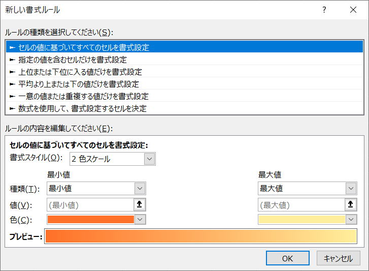

第91回.条件付き書式（FormatCondition）

条件付き書式は、シート上で設定しておいた方が良いのですが、
事前に設定しておけない場合は、マクロVBAで条件付き書式を設定します。
セル（Rangeオブジェクト）のFormatConditionsコレクションにFormatConditionオブジェクトを追加することで行います。
具体的な手順は、以下になります。
・セル（Rangeオブジェクト）のFormatConditionsコレクションのAddメソッドでFormatConditionオブジェクトを追加
・追加されたFormatConditionオブジェクトに対して書式を設定
理解しづらい部分はあると思いますが、
まずは、
FormatConditionsコレクション
FormatConditionオブジェクト
これの構文について詳細を見てみましょう。
FormatConditionsコレクション
各書式は、コレクションの要素、FormatConditionオブジェクトになります。
| メソッド | Add | 新しい条件付き書式を追加します。 追加されたFormatConditionオブジェクトが返されます。 |
| AddAboveAverage | 指定された範囲の条件付き書式ルールを示す新しい AboveAverage オブジェクトを返します。 | |
| AddColorScale | セルの色でグラデーションを使用して、選択した範囲内に含まれるセルの値の相対的な違いを示す条件付き書式ルールを表す新しい ColorScale オブジェクトを返します。 | |
| AddDatabar | 指定された範囲のデータ バーの条件付き書式ルールを表す Databar オブジェクトを取得します。 | |
| AddIconSetCondition | 指定された範囲のアイコン セットの条件付き書式ルールを示す新しい IconSetCondition オブジェクトを返します。 | |
| AddTop10 | 指定された範囲の条件付き書式ルールを示す Top10 オブジェクトを取得します。 | |
| AddUniqueValues | 指定されたセル範囲の条件付き書式ルーを表す新しい UniqueValues オブジェクトを返します。 | |
| Delete | オブジェクトを削除します。 | |
| Item | コレクションから単一のオブジェクトを返します。 | |
| プロパティ | Application | 対象となるオブジェクトが指定されない場合は、Excel アプリケーション (Application オブジェクト) を返します。 対象となるオブジェクトが指定された場合は、指定されたオブジェクトを作成した Application オブジェクトを返します。 OLE オートメーションを使っていて、オブジェクトのアプリケーションにアクセスするときなどに、このプロパティを使います。 値の取得のみ可能です。 |
| Count | コレクションに含まれるオブジェクトの数を表す長整数型 (Long) の値を返します。 | |
| Creator | 現在のオブジェクトが作成されたアプリケーションを示す 32 ビットの整数を取得します。 値の取得のみ可能です。長整数型 (Long) の値を使用します。 |
|
| Parent | 指定されたオブジェクトの親オブジェクトを取得します。 値の取得のみ可能です。 |
Addメソッド
| Type |
セル値またはオブジェクト式のどちらを基に条件付き書式を設定するかを指定します。
|
||||||||||||||||||||||||||||
| Operator | 条件付き書式の演算子を指定します。指定できる定数は、XlFormatConditionOperator クラスの xlBetween、xlEqual、xlGreater、xlGreaterEqual、xlLess、xlLessEqual、xlNotBetween、xlNotEqual のいずれかです。Type が xlExpression の場合、引数 Operator は無視されます。 | ||||||||||||||||||||||||||||
| Formula1 | 条件付き書式に関連させる値またはオブジェクト式を指定します。定数値、文字列値、セル参照、または数式を指定できます。 | ||||||||||||||||||||||||||||
| Formula2 | 引数 Operator に xlBetween または xlNotBetween を指定した場合、条件付き書式の 2 番目の部分に 関連させる値またはオブジェクト式を指定します。それ以外を指定した場合、この引数は無視されます。定数値、文字列値、セル参照、または数式を指定できます。 |
FormatConditionsのメソッドの使用例
「セルの値」「以下」「50」になります。
書式を設定するのは、FormatConditionオブジェクトです。
FormatConditionオブジェクト
| メソッド | Delete | オブジェクトを削除します。 |
| Modify | 既存の条件付き書式を変更します。 | |
| ModifyAppliesToRange | 書式のルールが適用されるセル範囲を設定します。 | |
| SetFirstPriority | 条件付き書式ルールの優先度の値を "1" に設定し、ワークシート内の他のルールより先に評価されるようにします。 | |
| SetLastPriority | 条件付き書式ルールの順位を設定し、ワークシート上の他のすべてのルールの後に評価されるようにします。 | |
| プロパティ | Application | 対象となるオブジェクトが指定されない場合は、Excel アプリケーション (Application オブジェクト) を返します。対象となるオブジェクトが指定された場合は、指定されたオブジェクトを作成した Application オブジェクトを返します。OLE オートメーションを使っていて、オブジェクトのアプリケーションにアクセスするときなどに、このプロパティを使います。値の取得のみ可能です。 |
| AppliesTo | 書式ルールを適用するセル範囲を表す Range オブジェクトを返します。 | |
| Borders | スタイルまたはセル範囲 (条件付き書式の一部として定義された範囲を含む) の罫線を表す Borders コレクションを取得します。 | |
| Creator | 現在のオブジェクトが作成されたアプリケーションを示す 32 ビットの整数を取得します。値の取得のみ可能です。長整数型 (Long) の値を使用します。 | |
| DateOperator | 書式の条件に使用される日付演算子を指定します。値の取得および設定が可能です。 | |
| Font | 指定したオブジェクトのフォントを表す Font オブジェクトを取得します。 | |
| Formula1 | 条件付き書式または入力規則に使用されている値またはオブジェクト式を返します。定数値、文字列値、セル参照、または数式を使用できます。値の取得のみ可能です。文字列型 (String) の値を使用します。 | |
| Formula2 | 条件付き書式または入力規則の 2 番目の部分に使用されている値またはオブジェクト式を返します。Operator プロパティに xlBetween または xlNotBetween が設定されている場合にだけ、このプロパティを使用できます。定数値、文字列値、セル参照、または数式を指定できます。値の取得のみ可能です。文字列型 (String) の値を使用します。 | |
| Interior | 指定されたオブジェクトの塗りつぶし属性を表す Interior オブジェクトを取得します。 | |
| NumberFormat | 条件付き書式ルールが True に評価された場合にセルに適用される表示形式を設定します。値の取得および設定が可能です。バリアント型 (Variant) の値を使用します。 | |
| Operator | 条件付き書式の演算子を表す長整数型 (Long) の値を返します。 | |
| Parent | 指定されたオブジェクトの親オブジェクトを取得します。値の取得のみ可能です。 | |
| Priority | 条件付き書式ルールの優先度の値を取得、または設定します。優先度は、ワークシート内に複数の条件付き書式ルールが存在する場合、その評価の順序を決定します。 | |
| PTCondition | 条件付き書式がピボットテーブル チャートに適用されるかどうかを表すブール型 (Boolean) の値を返します。値の取得のみ可能です。 | |
| ScopeType | 条件付き書式がピボットテーブル チャートに適用される場合、その適用範囲を表す XlPivotConditionScope クラスの定数を取得、または設定します。 | |
| StopIfTrue | 現在のルールが True に評価された場合、そのセルの書式ルールをさらに評価するかどうかを表すブール型 (Boolean) の値を取得、または設定します。 | |
| Text | 条件付き書式ルールで使用されるテキスト文字列を指定する文字列型 (String) の値を設定します。 | |
| TextOperator | 条件付き書式ルールで実行されるテキスト検索を指定する XlContainsOperator クラスの定数の 1 つを設定します。 | |
| Type | オブジェクトの種類を表す長整数型 (Long) の値を返します。xlFormatConditionType クラスの定数を使用します。 |
StopIfTrue
これが何かという事です。
これは、シートの条件付書式の「ルールの管理」のダイアログ
Trueで停止です。
| オブジェクト | プロパティ |
| Font | Bold |
| Color | |
| ColorIndex | |
| FontStyle | |
| Italic | |
| Strikethrough | |
| Underline | |
| 下線スタイル (会計) は使用できません。 | |
| Border | Bottom |
| Color | |
| Left | |
| Right | |
| Style | |
| 使用できる罫線の種類は、xlNone、xlSolid、xlDash、xlDot、xlDashDot、xlDashDotDot、xlGray50、xlGray75、xlGray25 です。それ以外はサポートされていません。 | |
| Top | |
| Weight | |
| 使用できる罫線の太さは、xlWeightHairline および xlWeightThin です。それ以外はサポートされていません。 | |
| Interior | Color |
| ColorIndex | |
| Pattern | |
| PatternColorIndex |
FormatConditionのプロパティ設定の使用例
(1)は、先頭の条件になります。
条件付き書式のマクロVBA実践例
90%未満の場合は赤色で塗りつぶす
100%未満の場合は黄色で塗りつぶす
これを行うVBAコードです。
Sub sample1()
With Worksheets("Sheet1").Range("A1:A10")
.FormatConditions.Delete
.FormatConditions.Add Type:=xlCellValue, Operator:=xlLess, Formula1:="90%"
.FormatConditions(1).Interior.Color = vbRed
.FormatConditions.Add Type:=xlCellValue, Operator:=xlLess, Formula1:="100%"
.FormatConditions(2).Interior.Color = vbYellow
End With
End Sub
セルに既に条件付き書式が設定されている場合を想定して、条件付き書式を一旦削除しています。
最初のFormatConditions.AddでFormatConditions(1)が追加され、
次のFormatConditions.AddでFormatConditions(2)が追加されます。
もっと多くなってくると、数値指定が面倒になってきます。
以下のように、Addメソッドの戻り値のFormatConditionオブジェクトを変数に入れて使うことが出来ます。
Sub sample2()
Dim fc As FormatCondition
With Worksheets("Sheet1").Range("A1:A10")
.FormatConditions.Delete
Set fc = .FormatConditions.Add(Type:=xlCellValue, Operator:=xlLess, Formula1:="90%")
fc.Interior.Color = vbRed
Set fc = .FormatConditions.Add(Type:=xlCellValue, Operator:=xlLess, Formula1:="100%")
fc.Interior.Color = vbYellow
End With
End Sub
書き方の注意点としては、
.FormatConditions.Add Type:=xlCellValue, Operator:=xlLess, Formula1:="90%"
この場合は、Addの後ろに半角空白をおいて引数を指定します。
Set fc = .FormatConditions.Add(Type:=xlCellValue, Operator:=xlLess, Formula1:="90%")
この場合は、Addの後ろの()の中に引数を指定します。
VBAにおける括弧()の使い方
マクロVBAの条件付き書式について
それぞれに、プロパティ・メソッドを持っています。
これらを全て覚える事は大変ですし、あまり意味がありません。
適宜、マクロの記録を利用して、各プロパティ・メソッドを調べて下さい。
「マクロの記録で覚えるVBA」の第21回.条件付き書式
同じテーマ「マクロVBA入門」の記事
第88回.並べ替え（Sort）
第89回.オートフィルタｰ（AutoFilter）
第90回.フィルターオプションの設定（AdvancedFilter）
第91回.条件付き書式（FormatCondition）
第126回.入力規則（Validation）
第92回.名前定義（Names）
第93回.ピボットテーブル（PivotTable）
第94回.コメント（Comment）
第95回.ハイパーリンク（Hyperlink）
第96回.グラフ（Chart）
第97回.図形オートシェイプ（Shape）
新着記事NEW ・・・新着記事一覧を見る
VBA100本ノック 100本目：WEBから100本ノックのリストを取得｜VBA練習問題（3月3日）
VBA100本ノック 99本目：自動席替え（行列と前後左右が全て違うように）｜VBA練習問題（3月2日）
VBA100本ノック 98本目：席替えルールが守られているか確認｜VBA練習問題（3月1日）
VBA100本ノック 97本目：Accessデータを取得（グループ集計）｜VBA練習問題（2月27日）
VBA100本ノック 96本目：Accessデータを取得（マスタ結合&抽出）｜VBA練習問題（2月26日）
VBA100本ノック 95本目：図形のテキストを検索するフォーム作成｜VBA練習問題（2月24日）
VBA100本ノック 94本目：表範囲からHTMLのtableタグを作成｜VBA練習問題（2月23日）
VBA100本ノック 93本目：複数ブックを連結して再分割｜VBA練習問題（2月22日）
VBA100本ノック 92本目：セルの色を16進で返す関数｜VBA練習問題（2月20日）
VBA100本ノック 91本目：時間計算（残業時間の月間合計）｜VBA練習問題（2月19日）
アクセスランキング ・・・ ランキング一覧を見る
1.最終行の取得（End,Rows.Count）｜VBA入門
2.RangeとCellsの使い方｜VBA入門
3.変数宣言のDimとデータ型｜VBA入門
4.マクロって何？VBAって何？｜VBA入門
5.Range以外の指定方法（Cells,Rows,Columns）｜VBA入門
6.セルのコピー&値の貼り付け（PasteSpecial）｜VBA入門
7.繰り返し処理（For Next)｜VBA入門
8.セルに文字を入れるとは（Range,Value）｜VBA入門
9.マクロはどこに書くの（VBEの起動）｜VBA入門
10.とにかく書いてみよう（Sub,End Sub）｜VBA入門
このサイトがお役に立ちましたら「シェア」「Bookmark」をお願いいたします。
記述には細心の注意をしたつもりですが、
間違いやご指摘がありましたら、「お問い合わせ」からお知らせいただけると幸いです。
掲載のVBAコードは動作を保証するものではなく、あくまでVBA学習のサンプルとして掲載しています。
掲載のVBAコードは自己責任でご使用ください。万一データ破損等の損害が発生しても責任は負いません。